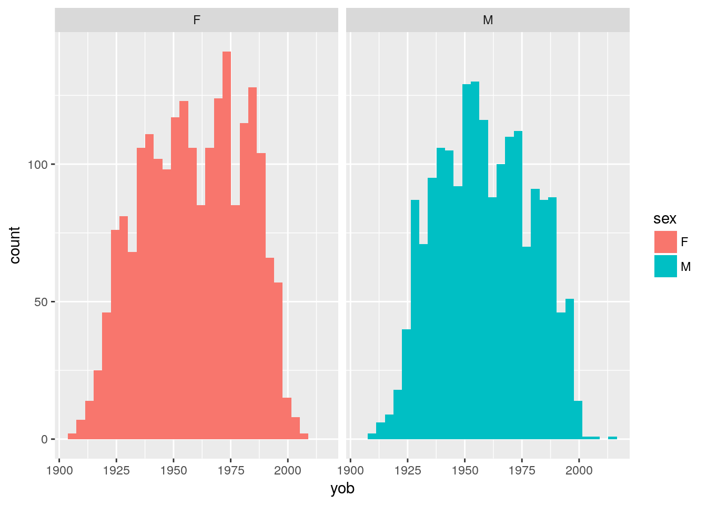

Last updated: 2018-07-17
workflowr checks: (Click a bullet for more information) ✔ R Markdown file: up-to-date
Great! Since the R Markdown file has been committed to the Git repository, you know the exact version of the code that produced these results.
✔ Environment: empty
Great job! The global environment was empty. Objects defined in the global environment can affect the analysis in your R Markdown file in unknown ways. For reproduciblity it’s best to always run the code in an empty environment.
✔ Seed:
set.seed(20180715)
The command set.seed(20180715) was run prior to running the code in the R Markdown file. Setting a seed ensures that any results that rely on randomness, e.g. subsampling or permutations, are reproducible.
✔ Session information: recorded
Great job! Recording the operating system, R version, and package versions is critical for reproducibility.
✔ Repository version: 2891761
wflow_publish or wflow_git_commit). workflowr only checks the R Markdown file, but you know if there are other scripts or data files that it depends on. Below is the status of the Git repository when the results were generated:
Untracked files:
Untracked: data/opioid_people.csv
Untracked: data/opioid_scripts.csv
Untracked: data/script_data opioids.R
Untracked: data/script_data.R
Unstaged changes:
Modified: analysis/_site.yml
Modified: analysis/about.Rmd
Modified: analysis/createApneaSample.Rmd
Modified: output/ap_N02.csv
Modified: output/ap_balanced.csv
source('lib/functions.R')
# -------------------------------------------------df_pp = read.csv('data/opioid_people.csv') %>% as.tibble()
df_scripts = read.csv('data/opioid_scripts.csv') %>% as.tibble()
df_all = df_pp %>% inner_join( df_scripts)Joining, by = "pin"df_pp %>%
group_by( sex ) %>%
summarise( mean(yob))# A tibble: 2 x 2
sex `mean(yob)`
<fct> <dbl>
1 F 1959.
2 M 1959.histogram
ggplot( df_pp, aes( yob, fill=sex )) +
geom_histogram() +
facet_wrap( ~ sex )`stat_bin()` using `bins = 30`. Pick better value with `binwidth`.
| Version | Author | Date |
|---|---|---|
| 2891761 | Dennis Wollersheim | 2018-07-17 |
df_pp %>%
mutate( yob_group = cut(yob, 10 )) %>%
count(yob_group, sex )# A tibble: 20 x 3
yob_group sex n
<fct> <fct> <int>
1 (1.9e+03,1.91e+03] F 19
2 (1.9e+03,1.91e+03] M 6
3 (1.91e+03,1.93e+03] F 136
4 (1.91e+03,1.93e+03] M 53
5 (1.93e+03,1.94e+03] F 246
6 (1.93e+03,1.94e+03] M 250
7 (1.94e+03,1.95e+03] F 309
8 (1.94e+03,1.95e+03] M 291
9 (1.95e+03,1.96e+03] F 322
10 (1.95e+03,1.96e+03] M 350
11 (1.96e+03,1.97e+03] F 294
12 (1.96e+03,1.97e+03] M 303
13 (1.97e+03,1.98e+03] F 363
14 (1.97e+03,1.98e+03] M 284
15 (1.98e+03,1.99e+03] F 304
16 (1.98e+03,1.99e+03] M 232
17 (1.99e+03,2e+03] F 118
18 (1.99e+03,2e+03] M 94
19 (2e+03,2.01e+03] F 7
20 (2e+03,2.01e+03] M 3df_pp %>%
mutate( yob_group = cut(yob, 10 )) %>%
count(sex )# A tibble: 2 x 2
sex n
<fct> <int>
1 F 2118
2 M 1866df_all %>%
count( sex ) # A tibble: 2 x 2
sex n
<fct> <int>
1 F 30656
2 M 21426df_all %>%
group_by( sex ) %>%
summarise( sum(quantity) ) # A tibble: 2 x 2
sex `sum(quantity)`
<fct> <int>
1 F 997256
2 M 774441df_all %>%
group_by( sex ) %>%
summarise( mean(quantity) ) # A tibble: 2 x 2
sex `mean(quantity)`
<fct> <dbl>
1 F 32.5
2 M 36.1df_all %>%
group_by( pin, sex ) %>%
summarise( n_per_person = sum(quantity) ) %>%
group_by( sex ) %>%
summarise( mean( n_per_person ))# A tibble: 2 x 2
sex `mean(n_per_person)`
<fct> <dbl>
1 F 471.
2 M 415.## Session informationsessionInfo()R version 3.4.2 (2017-09-28)
Platform: x86_64-pc-linux-gnu (64-bit)
Running under: Ubuntu 17.10
Matrix products: default
BLAS: /usr/lib/x86_64-linux-gnu/openblas/libblas.so.3
LAPACK: /usr/lib/x86_64-linux-gnu/libopenblasp-r0.2.20.so
locale:
[1] LC_CTYPE=en_AU.UTF-8 LC_NUMERIC=C
[3] LC_TIME=en_AU.UTF-8 LC_COLLATE=en_AU.UTF-8
[5] LC_MONETARY=en_AU.UTF-8 LC_MESSAGES=en_AU.UTF-8
[7] LC_PAPER=en_AU.UTF-8 LC_NAME=C
[9] LC_ADDRESS=C LC_TELEPHONE=C
[11] LC_MEASUREMENT=en_AU.UTF-8 LC_IDENTIFICATION=C
attached base packages:
[1] stats graphics grDevices utils datasets methods base
other attached packages:
[1] bindrcpp_0.2.2 forcats_0.3.0 dplyr_0.7.6 purrr_0.2.5
[5] readr_1.1.1 tidyr_0.8.1 tibble_1.4.2 ggplot2_2.2.1
[9] tidyverse_1.2.1 workflowr_1.1.1 pander_0.6.1 kableExtra_0.8.0
[13] knitr_1.20 stringr_1.3.1 wrapr_1.4.0 nvimcom_0.9-72
loaded via a namespace (and not attached):
[1] tidyselect_0.2.4 reshape2_1.4.3 haven_1.1.1
[4] lattice_0.20-35 colorspace_1.3-2 htmltools_0.3.6
[7] viridisLite_0.3.0 yaml_2.1.19 utf8_1.1.4
[10] rlang_0.2.1 R.oo_1.22.0 pillar_1.2.3
[13] foreign_0.8-69 glue_1.2.0 R.utils_2.6.0
[16] readxl_1.0.0 modelr_0.1.1 plyr_1.8.4
[19] bindr_0.1.1 cellranger_1.1.0 gtable_0.2.0
[22] munsell_0.4.3 rvest_0.3.2 R.methodsS3_1.7.1
[25] psych_1.8.3.3 evaluate_0.10.1 labeling_0.3
[28] parallel_3.4.2 broom_0.4.4 Rcpp_0.12.17
[31] scales_0.5.0 backports_1.1.2 jsonlite_1.5
[34] mnormt_1.5-5 hms_0.4.2 digest_0.6.15
[37] stringi_1.2.3 rprojroot_1.3-2 grid_3.4.2
[40] cli_1.0.0 tools_3.4.2 magrittr_1.5
[43] lazyeval_0.2.1 crayon_1.3.4 whisker_0.3-2
[46] pkgconfig_2.0.1 xml2_1.1.1 lubridate_1.7.4
[49] assertthat_0.2.0 rmarkdown_1.10 httr_1.3.1
[52] rstudioapi_0.7 R6_2.2.2 nlme_3.1-131
[55] git2r_0.21.0 compiler_3.4.2 This reproducible R Markdown analysis was created with workflowr 1.1.1